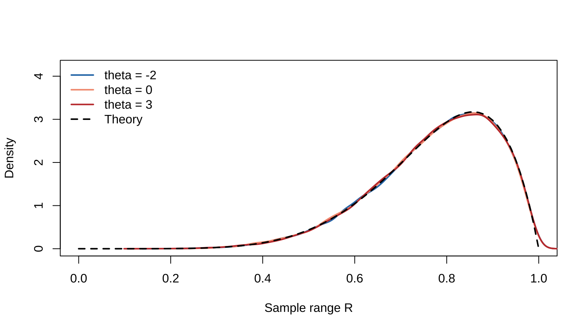

Chapter 6 Principles of Data Reduction
This chapter corresponds to chap-6.tex, its four LaTeX fragments, and Chapter 6.md. It develops the sufficiency, likelihood, and equivariance principles, together with minimal sufficiency, ancillary statistics, completeness, and Basu’s theorem. Necessary corrections to supports, normal densities, and theorem conditions are documented in migration_notes.md.
6.1 Why data reduction is needed
Let \(\mathbf X=(X_1,\ldots,X_n)\) and let \(\mathbf x=(x_1,\ldots,x_n)\) be the observed sample. A long list is difficult to interpret, while statistics such as the mean, variance, maximum, and minimum summarize key features.
Every statistic \(T(\mathbf X)\) defines a reduction. Let
\[ \mathcal T=\{t:t=T(\mathbf x),\ \mathbf x\in\mathcal X\}, \qquad A_t=\{\mathbf x:T(\mathbf x)=t\}. \]
The sets \(A_t\) partition the sample space. Reporting only \(T(\mathbf x)=t\) is equivalent to reporting that \(\mathbf x\in A_t\): sample points in the same cell receive the same summary.
The sufficiency principle seeks to retain parameter information; the likelihood principle describes the evidence supplied by the observed sample; and the equivariance principle requires inference to transform consistently with measurement or model structure.
6.2 The sufficiency principle and conditional definition
Definition 6.1 A statistic \(T(\mathbf X)\) is sufficient for \(\theta\) if the conditional distribution of \(\mathbf X\) given \(T(\mathbf X)\) does not depend on \(\theta\).
The sufficiency principle says that inference about \(\theta\) should depend on the sample only through a sufficient statistic. In particular, \(T(\mathbf x)=T(\mathbf y)\) should lead to the same inference for the two sample points.
If \(p(\mathbf x\mid\theta)\) is the joint pmf or pdf and \(q(t\mid\theta)\) is that of \(T\), then, wherever defined,
\[ \frac{p(\mathbf x\mid\theta)}{q(T(\mathbf x)\mid\theta)} \]
being constant in \(\theta\) expresses that the conditional law contains no parameter.
Example 6.1 If \(X_i\overset{\mathrm{iid}}\sim\operatorname{Bernoulli}(p)\) and \(T=\sum_iX_i\), then
\[p(\mathbf x\mid p)=p^{\sum x_i}(1-p)^{n-\sum x_i},\qquad q(t\mid p)=\binom ntp^t(1-p)^{n-t}.\]
Thus
\[ \frac{p(\mathbf x\mid p)}{q(T(\mathbf x)\mid p)} =\frac1{\binom n{T(\mathbf x)}}, \]
which is free of \(p\). Hence the total number of successes is sufficient.
6.3 The factorization theorem and normal samples
Theorem 6.1 Neyman–Fisher factorization theorem. A statistic \(T(\mathbf X)\) is sufficient for \(\theta\) if and only if functions \(g\) and \(h\) exist such that
\[f(\mathbf x\mid\theta)=g(T(\mathbf x)\mid\theta)h(\mathbf x),\]
where \(h\) does not depend on \(\theta\).
In the discrete case this follows from
\[ P_\theta(\mathbf X=\mathbf x) =P_\theta\{T(\mathbf X)=T(\mathbf x)\} P\{\mathbf X=\mathbf x\mid T(\mathbf X)=T(\mathbf x)\}; \]
the continuous case uses conditional densities.
Example 6.2 Let \(X_i\overset{\mathrm{iid}}\sim N(\mu,\sigma^2)\) with known \(\sigma^2\). Since
\[ \sum_{i=1}^n(x_i-\mu)^2 =\sum_{i=1}^n(x_i-\bar x)^2+n(\bar x-\mu)^2, \]
the joint density factors as
\[ \begin{aligned} f(\mathbf x\mid\mu) &=(2\pi\sigma^2)^{-n/2} \exp\left[-\frac1{2\sigma^2}\sum_i(x_i-\bar x)^2\right]\\ &\quad\times\exp\left[-\frac n{2\sigma^2}(\bar x-\mu)^2\right]. \end{aligned} \]
Therefore \(\bar X\) is sufficient for \(\mu\). The same result follows by checking that the conditional density based on \(\bar X\sim N(\mu,\sigma^2/n)\) is free of \(\mu\).
6.4 Sufficient statistics with parameter-dependent support
Example 6.3 If \(X_i\) are discrete uniform on \(\{1,\ldots,\theta\}\), then
\[ f(\mathbf x\mid\theta)=\theta^{-n} I\{x_i\in\mathbb N,\ x_i\ge1\ \forall i\}I\{X_{(n)}\le\theta\}. \]
The maximum \(X_{(n)}\) is therefore sufficient for \(\theta\).
Example 6.4 If \(X_i\overset{\mathrm{iid}}\sim N(\mu,\sigma^2)\) and both parameters are unknown, then
\[ f(\mathbf x\mid\mu,\sigma^2) =(2\pi\sigma^2)^{-n/2} \exp\left[-\frac{(n-1)s^2+n(\bar x-\mu)^2}{2\sigma^2}\right]. \]
Hence \((\bar X,S^2)\) is jointly sufficient for \((\mu,\sigma^2)\). Equivalently, one may use \((\sum_iX_i,\sum_iX_i^2)\).
6.5 Minimal sufficient statistics
Definition 6.2 A sufficient statistic \(T\) is minimal sufficient if, for every other sufficient statistic \(T'\), there is a function \(g\) such that \(T=g(T')\). It achieves the greatest reduction among sufficient statistics.
Theorem 6.2 Lehmann–Scheffé criterion. If, for every pair \(\mathbf x,\mathbf y\),
\[ \frac{f(\mathbf x\mid\theta)}{f(\mathbf y\mid\theta)} \]
is constant in \(\theta\) if and only if \(T(\mathbf x)=T(\mathbf y)\), then \(T\) is minimal sufficient.
For the two-parameter normal model, the density ratio is
\[ \exp\left\{\frac{-n(\bar x^2-\bar y^2)+2n\mu(\bar x-\bar y) -(n-1)(s_{\mathbf x}^2-s_{\mathbf y}^2)}{2\sigma^2}\right\}. \]
It is parameter-free exactly when \(\bar x=\bar y\) and \(s_{\mathbf x}^2=s_{\mathbf y}^2\). Thus \((\bar X,S^2)\) is minimal sufficient.
If \(X_i\sim U(\theta,\theta+1)\), then
\[f(\mathbf x\mid\theta)=I\{x_{(n)}-1<\theta<x_{(1)}\}.\]
Two samples yield the same feasible parameter interval exactly when their minima and maxima agree. Therefore \((X_{(1)},X_{(n)})\) is minimal sufficient.
6.6 Ancillary statistics and location-scale families
Definition 6.3 A statistic is ancillary for the parameter of interest if its distribution does not depend on that parameter.
Example 6.5 For \(X_i\sim U(\theta,\theta+1)\), let \(R=X_{(n)}-X_{(1)}\) and \(M=(X_{(1)}+X_{(n)})/2\). The order-statistic density and transformation give
\[f_{R,M}(r,m)=n(n-1)r^{n-2},\]
where \(0<r<1\) and \(\theta+r/2<m<\theta+1-r/2\). Hence
\[f_R(r)=n(n-1)r^{n-2}(1-r),\qquad0<r<1,\]
which is free of \(\theta\). Thus the range is ancillary.
For a location family \(F(x-\theta)\), the range is also invariant to location. For a scale family \(F(x/\sigma)\), the joint distribution of \((X_1/X_n,\ldots,X_{n-1}/X_n)\) is free of \(\sigma\); for example, \((\sum_iX_i)/X_n\) is ancillary.
Ancillarity does not mean uselessness. In a normal model where only \(\mu\) is of interest, \(\bar X\) is minimal sufficient for \(\mu\), while \(S^2\) is ancillary for \(\mu\) and helps estimate the variance of \(\bar X\).
set.seed(6201)
n <- 8
theta_values <- c(-2, 0, 3)
cols <- c("#2878B5", "#F39B7F", "#C43C39")
plot(NA, xlim = c(0, 1), ylim = c(0, 4.2), xlab = "Sample range R", ylab = "Density")
for (j in seq_along(theta_values)) {
x <- matrix(runif(30000 * n, theta_values[j], theta_values[j] + 1), ncol = n)
lines(density(apply(x, 1, function(z) max(z) - min(z))), col = cols[j], lwd = 2)
}
curve(n * (n - 1) * x^(n - 2) * (1 - x), 0, 1, add = TRUE, lwd = 2, lty = 2)
legend("topleft", c(paste0("theta = ", theta_values), "Theory"),
col = c(cols, "black"), lwd = 2, lty = c(1, 1, 1, 2), bty = "n")
Figure 6.1: Uniform-sample ranges have the same distribution under different location parameters
6.7 Complete statistics
Definition 6.4 The distribution family of \(T\) is complete if, for every integrable \(g\),
\[E_\theta\{g(T)\}=0\quad\text{for all }\theta\]
implies \(P_\theta\{g(T)=0\}=1\) for all \(\theta\).
Example 6.6 If \(T\sim\operatorname{Bin}(n,p)\) and \(E_pg(T)=0\) for every \(0<p<1\), then
\[ 0=(1-p)^n\sum_{t=0}^ng(t)\binom nt\left(\frac p{1-p}\right)^t. \]
With \(r=p/(1-p)\), this polynomial vanishes for every \(r>0\), so every coefficient \(g(t)\binom nt\) is zero. The binomial family is complete.
If \(X_i\sim U(0,\theta)\), then \(T=X_{(n)}\) has density
\[f_T(t\mid\theta)=nt^{n-1}\theta^{-n},\qquad0<t<\theta.\]
If \(E_\theta g(T)=0\) for every \(\theta\), then \(\int_0^\theta ng(t)t^{n-1}\,dt=0\). Differentiation gives \(ng(\theta)\theta^{n-1}=0\), proving completeness. Together with factorization, \(X_{(n)}\) is complete sufficient.
6.8 Basu’s theorem and independence
Theorem 6.3 Basu’s theorem. A complete sufficient statistic is independent of every ancillary statistic.
If \(X_i\) are iid exponential with mean \(\theta\), then \(T=\sum_iX_i\) is complete sufficient and \(G=X_n/\sum_iX_i\) is scale-free and ancillary. Hence \(G\) and \(T\) are independent.
For normal samples, the classical independence of \(\bar X\) and \(S^2\) can likewise be understood through complete-sufficient structure and ancillarity, with the parameter space and target parameter stated carefully.
If a minimal sufficient statistic exists, every complete sufficient statistic is also minimal sufficient. Completeness without sufficiency is not enough.
6.9 The likelihood principle
Definition 6.5 After observing \(\mathbf X=\mathbf x\),
\[L(\theta\mid\mathbf x)=f(\mathbf x\mid\theta)\]
as a function of \(\theta\) is the likelihood function.
The likelihood principle says that all sample evidence about \(\theta\) is represented by the likelihood. If two outcomes satisfy
\[L_1(\theta\mid\mathbf x_1)=C\,L_2(\theta\mid\mathbf x_2),\qquad C>0,\]
where \(C\) does not depend on \(\theta\), they should yield the same evidence and inference about \(\theta\).
6.10 The equivariance principle
Measurement equivariance requires inference not to depend on an arbitrary measurement scale. Formal invariance requires problems with the same mathematical structure to use procedures of the same form.
Example 6.7 Let \(X\sim\operatorname{Bin}(n,p)\), and let \(T(x)\) estimate \(p\) after observing \(X=x\). Define \(Y=n-X\sim\operatorname{Bin}(n,q)\), where \(q=1-p\), and let \(T^*(y)\) estimate \(q\).
Measurement equivariance gives
\[T(x)=1-T^*(n-x),\]
while formal invariance gives \(T^*(z)=T(z)\). Thus the estimation rule must satisfy
\[T(x)=1-T(n-x).\]
6.11 Chapter summary
- A statistic partitions the sample space into classes having the same summary.
- Sufficiency retains parameter information; minimal sufficiency maximizes reduction.
- Ancillary statistics have parameter-free marginal laws; completeness rules out nontrivial zero-mean functions.
- Basu’s theorem links sufficiency, completeness, ancillarity, and independence.
- Likelihood and equivariance principles constrain evidence and structural consistency.
Source-slide reference: Casella, G. and Berger, R. L. (2002), Statistical Inference, 2nd ed., Chapter 6.